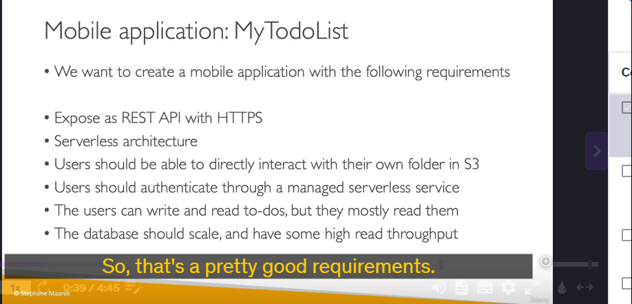
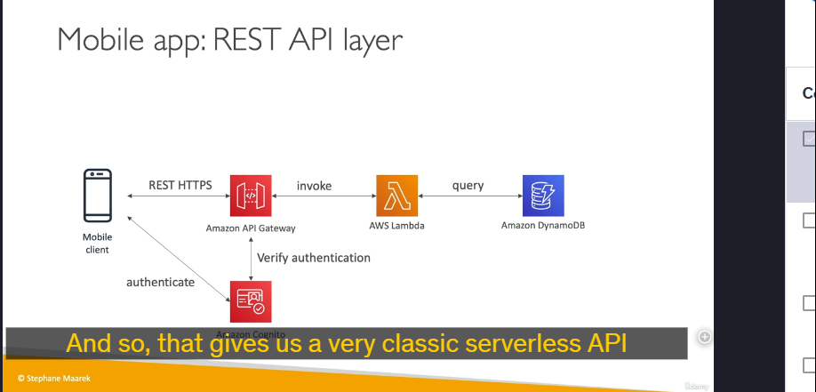
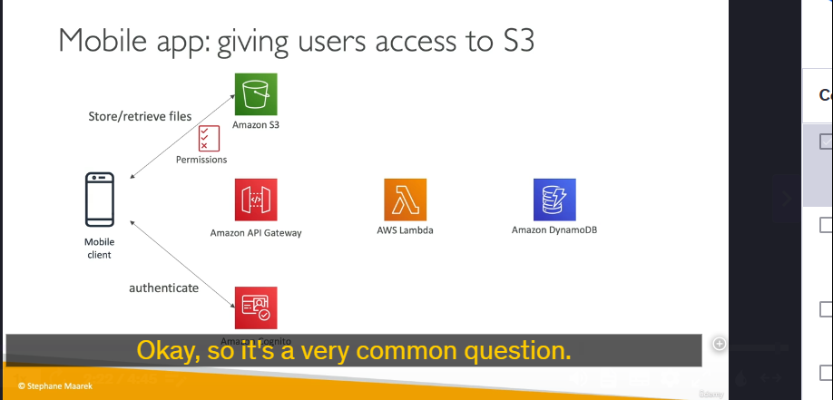
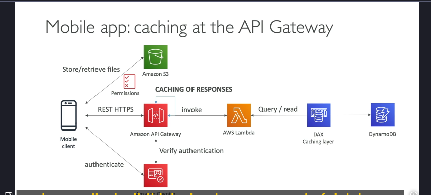
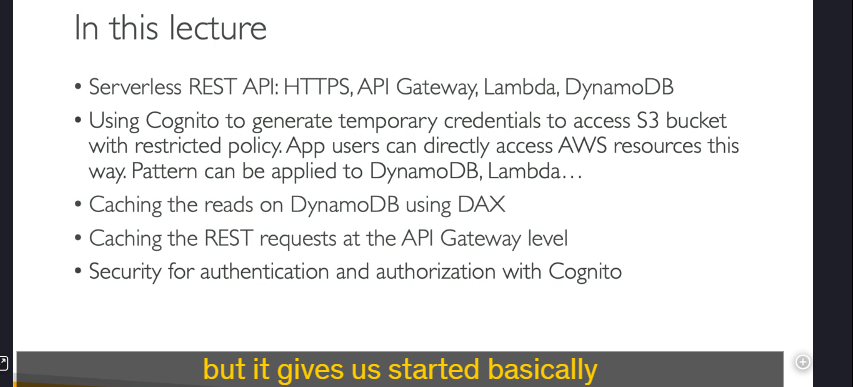

Mobile app
Chi Tiết Kiến Thức Về Serverless Architectures và Ứng Dụng MyTodoList
Trong bài học này, chúng ta đã thảo luận về cách xây dựng một ứng dụng di động có tên MyTodoList sử dụng kiến trúc serverless. Dưới đây là các điểm chính và chi tiết kỹ thuật:
1. Yêu Cầu Của Ứng Dụng

- REST API với HTTPS endpoints: Ứng dụng cần cung cấp một API REST để tương tác với dữ liệu.
- Kiến trúc serverless: Không cần quản lý máy chủ, tự động scale và chỉ trả tiền cho tài nguyên sử dụng.
- Tương tác trực tiếp với S3: Người dùng có thể quản lý dữ liệu của họ trong một thư mục riêng trên Amazon S3.
- Xác thực người dùng: Sử dụng dịch vụ xác thực serverless (managed service).
- Tối ưu hiệu suất: Ứng dụng có nhiều thao tác đọc (read) hơn ghi (write), do đó cần một cơ sở dữ liệu có khả năng scale và throughput cao.
2. Kiến Trúc Serverless Đề Xuất
Để đáp ứng các yêu cầu trên, kiến trúc được đề xuất bao gồm các thành phần chính sau: 
a. Amazon API Gateway
- Vai trò: Cung cấp các HTTPS endpoints để tương tác với ứng dụng.
- Tích hợp với Lambda: API Gateway sẽ kích hoạt các hàm Lambda để xử lý yêu cầu từ client.
- Lợi ích: Tự động scale, không cần quản lý máy chủ, và hỗ trợ HTTPS.
b. AWS Lambda
- Vai trò: Xử lý logic nghiệp vụ (ví dụ: thêm, xóa, sửa to-do).
- Tích hợp với DynamoDB: Lambda đọc và ghi dữ liệu vào DynamoDB.
- Lợi ích: Serverless, tự động scale, và chỉ trả tiền cho thời gian thực thi.
c. Amazon DynamoDB
- Vai trò: Lưu trữ dữ liệu to-do của người dùng.
- Lợi ích: Cơ sở dữ liệu NoSQL serverless, tự động scale, và hỗ trợ throughput cao.
- Tối ưu hiệu suất: Sử dụng DynamoDB Accelerator (DAX) để cache các truy vấn đọc, giảm tải cho DynamoDB và cải thiện hiệu suất.
d. Amazon Cognito
- Vai trò: Quản lý xác thực người dùng.
- Cơ chế hoạt động:
- Người dùng đăng nhập qua Cognito.
- Cognito cung cấp temporary credentials (chứng chỉ tạm thời) để người dùng truy cập vào S3 hoặc các dịch vụ khác.
- Lợi ích: Bảo mật, không cần lưu trữ thông tin đăng nhập trên client.
e. Amazon S3

- Vai trò: Lưu trữ dữ liệu file của người dùng (ví dụ: hình ảnh, file đính kèm).
- Cơ chế truy cập: Người dùng nhận temporary credentials từ Cognito để truy cập vào thư mục riêng của họ trên S3.
- Lợi ích: Dễ dàng quản lý và scale.
3. Tối Ưu Hiệu Suất và Chi Phí

- DynamoDB Accelerator (DAX):
- Vai trò: Cache các truy vấn đọc, giảm tải cho DynamoDB.
- Lợi ích: Cải thiện hiệu suất và giảm chi phí (do giảm số lượng RCUs cần thiết).
- Caching tại API Gateway:
- Vai trò: Cache các phản hồi API nếu dữ liệu ít thay đổi.
- Lợi ích: Giảm thời gian phản hồi và tải cho Lambda.
4. Lợi Ích Của Kiến Trúc Serverless
- Không cần quản lý máy chủ: AWS quản lý tất cả tài nguyên.
- Tự động scale: Ứng dụng tự động scale dựa trên nhu cầu.
- Chi phí thấp: Chỉ trả tiền cho tài nguyên sử dụng.
- Bảo mật: Sử dụng Cognito để quản lý xác thực và temporary credentials.
5. Lưu Ý Quan Trọng
- Không lưu trữ AWS credentials trên client: Luôn sử dụng temporary credentials từ Cognito để đảm bảo bảo mật.
- Sử dụng DAX và caching: Để tối ưu hiệu suất và chi phí khi có nhiều thao tác đọc.
6. Tổng Kết
 Kiến trúc serverless cho ứng dụng MyTodoList bao gồm:
- API Gateway để cung cấp REST API.
- Lambda để xử lý logic.
- DynamoDB để lưu trữ dữ liệu.
- Cognito để quản lý xác thực.
- S3 để lưu trữ file.
- DAX và caching để tối ưu hiệu suất.
Đây là một kiến trúc phổ biến và hiệu quả cho các ứng dụng serverless, giúp giảm thiểu chi phí và công sức quản lý.